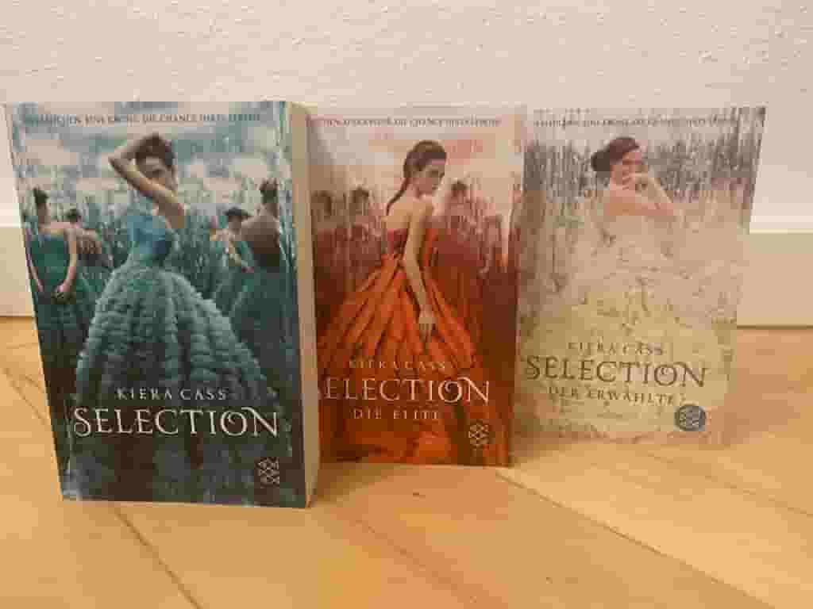

Meine Bücherliste
Divergent (Veronica Roth) ~ Genre: Action, Science-Fiction
Vielen ist bestimmt die Filmreihe "Divergent" bekannt und ist ein Filmliebling von einigen Menschen. Jedoch basiert diese Filmreihe tatsächlich auf den drei Büchern von Veronica Roth.
Die Buchreihe spielt in einer fiktiven, dystopischen Zukunft statt und die Menschheit ist von der Außenwelt durch hohe Mauern abgetrennt. Die Gesellschaft ist in fünf Fraktionen, soziale Kasten, eingeteilt: die Altruan (die Selbstlosen), die Ferox (die Furchtlosen), die Ken (die Wissenschaftler), die Candor (die Freimütigen) und die Amite (die Friedfertigen). Jugendliche müssen sich im Alter von 16 Jahren bei einer Zeremonie entscheiden, welcher Fraktion sie unwiderrufbar für den Rest ihres Lebens beitreten wollen.
Die Protagonistin Tris ist in der Fraktion "Altruan" aufgewachsen, fühlt sich jedoch von den mutigen "Feros" gänzlich angezogen. Soll sie diese wichtige Entscheidung nun mit dem Kopf entscheiden oder ihrem Herzen folgen?
Divergent ist eine dystopische, abenteuerreiche Science-Fiction Reihe, welche jedoch auch aus einem Großteil von Romantik besteht. Es ist eine Reihe, die mir sehr am Herzen liegt, da ich diese als jüngeres Mädchen schon gelesen habe und eine schöne Kindheitserinnerung damit verbinde. Absolut empfehlenswert für Menschen, welche Fans von der Buch- und Filmreihe "Tribute von Panem" sind.
Save Me (Mona Kasten) ~ Genre: New Adult, Romance
Die "Save Me" Reihe von Mona Kasten handelt von der Protagonistin Ruby, welche eine Stipendiatin auf dem Maxton Hall College ist und eher aus ärmlicheren Verhältnissen stammt. Jedoch sind auf dieser Schule gerade Geld, Macht und ein Status für jeden wichtig, was Ruby demnach in gewisser Maßen zu einer Außenseiterin macht. Sie stört sich jedoch nicht daran und versucht in ihrem Schulalltag so wenig wie möglich aufzufallen. Eines Tages erfährt sie jedoch ein Geheimnis, welches sie nie hätte erfahren sollen und stellt Ruby somit auf die Probe.
Die "Save Me" Reihe ist eine romantische New Adult Reihe, welche verschiedene Herausforderungen im Leben darstellt und wie man diese überwinden kann.
The Selection (Kiera Cass) ~ Genre: Fantasy, Dystopie, Romance
 Falls ihr absolute Fans der RTL Serie "Der Bachelor" seid, ist die Selection Reihe von Kierra Cass genau das Richtige für euch!
Denn die Triologie handelt von einem Prinzen namens Maxon, welcher unter 35 perfekten Mädchen seine Auserwählte finden will, um sie zu heiraten und somit den Thron besteigen zu können. Doch wer wird seine Auserwählte sein?
America, die Protagonistin, gehört zum niedrigen Stand der Gesellschaft. Für sie wäre es durch eine Heirat mit dem Prinzen möglich, in der Gesellschaft aufzusteigen und somit ihre Familie aus der Armut befreien zu können. Doch wird sie es schaffen erwählt zu werden?
"The Selection" ist eine Triologie, welche voller Drama und Intrigen steckt, jedoch auch einen politischen Aspekt behandelt. Somit ist immer ein Maß an Spannung enthalten. Für Bachelor-Fans ein "Must-Read"!
Berühre mich. Nicht. (Laura Kneidl) ~ Genre: Romance
Die Protagonistin Sage besitzt nichts als sie nach Nevada kommt, um dort das College zu besuchen. Jedoch stört sie das kein bisschen, denn sie will lediglich einen Neuanfang starten. Jedoch erscheint sich dies schwerer als gedacht, denn Sage wird von ihren Ängsten verfolgt und scheint die Vergangenheit nicht vergessen zu können. Als dann auch noch Luca erscheint, welcher alles verkörpert, vor dem Sage sich fürchtet, scheint ihr Neuanfang dem Abgrund geweiht. Doch Luca ist nicht der, den er auf den ersten Blick zu sein scheint.
Die "Berühre mich. Nicht." Duologie ist eine herzzerreißende Geschichte, welche sensible Themen wie Angststörungen und Traumatas thematisiert. Jedoch wird auch gezeigt, dass solche Zustände nur temporär sind und falls man sich in solch einem Lebensabschnitt befindet, auch wieder dort herausfindet. Diese Geschichte hat mich die ein oder andere Träne gekostet, da man sich ins Buch ziehen lassen hat und Sages Ängste genauestens miterleben konnte.
Nur noch ein einziges Mal (Colleen Hoover) ~ Genre: Romance
Als die Protaginistin Lily den angehenden Neurochirurgen Ryle kennenlernt, scheint Lilys schwierige Kindheit und Jugend vergessen zu sein. Vergessen scheint auch Atlas, ihre erste große Liebe, welcher von heute auf morgen plötzlich verschwand. Und aufeinmal steht Atlas nach so vielen Jahren vor ihr. Die gemeinsame Vorgeschichte von Lily und Atlas erweckt in Ryle seine Eifersucht und auch ein niemals vergessenes Trauma seiner Kindheit.
Dieses Standalone Buch ist eines der besten Bücher, die ich jemals lesen durfte. Es ist eine Achterbahn der Gefühle und thematisiert sehr wichtige Themen, wie Gewalt in einer Beziehung oder auch politische Themen, wie der Umgang des Staates gegenüber bedürftigen Menschen. Das Buch wechselt ständig zwischen der Gegenwart und der Vergangenheit. Man erlebt somit, was Lily in ihrer Kindheit alles durchmachen musste und wie ihre Beziehung mit Atlas sich zugetragen hat. "Nur noch ein einziges Mal" ist absolut empfehlenswert!
Meine Bücher Ratings:
(1 = schlecht, 2 = nicht so gut, 3 = in Ordnung, 4 = gut, 5 = ein "Must-Read")
| Buch | Rating |
|---|---|
| Divergent (Triologie) ~ Veronica Roth | 3 |
| Save Me (Triologie) ~ Mona Kasten | 3 |
| The Selection (Triologie) ~ Kiera Cass | 4 |
| Berühre Mich. Nicht. (Duologie) ~ Laura Kneidl | 5 |
| Nur noch ein einziges Mal. (Standalone) ~ Colleen Hoover | 5 |
Ebenfalls möchte ich euch gerne einen anderen Bücherblog ans Herz legen, welcher mich schon seit einigen Monaten begleitet und mir immer gute Buchempfehlungen bereitstellt:
isasbuecherblog.com